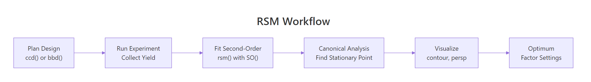
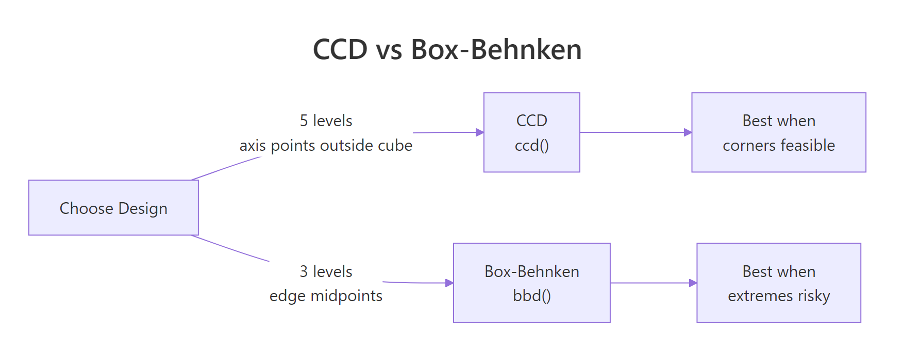

Response Surface Methodology in R: rsm Package, CCD & Box-Behnken
Response Surface Methodology (RSM) is a suite of techniques for finding the factor settings that maximize or minimize a response when you don't yet know the underlying equation. You run a planned experiment, fit a second-order polynomial to the results, then walk the surface to the peak.
This guide uses R's rsm package to build central composite and Box-Behnken designs, fit surface models, and extract the optimum in under twenty lines of code, with every block runnable right on the page.
How does response surface methodology work in R?
Factorial experiments answer which factors matter. RSM answers the next question, where exactly should we set them to hit the peak. The rsm package wraps design generation, second-order fitting, canonical analysis, and contour plots into one tight workflow. The block below fits a response surface to the classic ChemReact dataset and pulls out the optimum coordinates in four lines.
Read through the #> outputs. The canonical$xs row is what RSM is really about, the factor settings that maximize yield.
The stationary point (x1 = 0.35, x2 = 0.98) is where the fitted surface flattens out. In natural units that's roughly Time = 86.7 minutes and Temp = 179.9 degrees. One rsm() call, two factor settings, problem solved, at least for this model. The rest of the guide walks through how to get here from scratch on a new process, and how to decide whether the surface you fit is a peak, a bowl, a saddle, or a ridge.

Figure 1: The five-stage RSM workflow, from design to optimum.
rsm is pure-R and loads cleanly in WebR and local sessions. If the first library(rsm) call ever fails, run install.packages("rsm") once in a local RStudio session and the WebR block here will work on every subsequent visit.Try it: Refit the ChemReact surface as a first-order (linear-only) model using FO(x1, x2) instead of SO(x1, x2). Print the coefficients and notice what's missing.
Click to reveal solution
Explanation: FO() gives only linear terms. You lose the quadratics (x1^2, x2^2) and the interaction (x1:x2) that let the surface curve. That's exactly why second-order fits are the heart of RSM.
When should you use CCD versus Box-Behnken?
Central Composite Designs (CCD) and Box-Behnken Designs (BBD) are the two workhorses of RSM. They both support second-order fits, but they place their runs very differently. Your process constraints, not statistical theory, pick the winner.
The quick decision table:
| Property | CCD | Box-Behnken |
|---|---|---|
| Factor levels per variable | 5 (cube, axis, center) | 3 (midpoints, center) |
| Runs at extreme corners | Yes (cube block) | No |
| Axial points outside cube | Yes (alpha > 1) | Never |
| Rotatable by default | Yes | Approximately |
| Total runs (k=3) | ~20 | 15 |
| Best when | Corners are cheap and safe | Corners break things |
Let's get a concrete feel for the sizes. The block below builds one of each for three factors and reports the row count.
The CCD needs 20 runs (8 cube + 6 axial + 6 center), the BBD needs 15 (12 edge midpoints + 3 center). The BBD saves five experiments and avoids the four corner combinations entirely. In catalysis, that matters, a reactor run at maximum temperature and maximum pressure and maximum feed rate can destroy equipment.

Figure 2: CCD vs Box-Behnken: level count and where each design places its runs.
Try it: Build a Box-Behnken design for 4 factors with 3 center points. How many rows does it produce, and how does that compare to a 4-factor CCD?
Click to reveal solution
Explanation: The BBD needs 24 edge-midpoint runs plus 3 center points. The CCD needs 16 cube + 8 axial + 6 center. At k=4 the run-count gap narrows, but BBD still spares you four extreme-corner experiments.
How do you build a central composite design with ccd()?
A CCD has three parts. The cube block is a 2^k factorial (or fractional factorial for large k) with factors at ±1. The star block adds 2k points along each axis at ±alpha, with alpha usually set so the design is rotatable. Center points sit at the origin and appear in both blocks for pure-error estimation.
ccd() takes four key arguments. basis is the number of factors (or a formula for fractional designs). n0 = c(cube_centers, star_centers) controls center points per block. alpha defaults to "rotatable", which picks the axial distance that makes prediction variance depend only on distance from the origin. coding is a list of formulas mapping coded units (x1, x2, ...) to your real-world variables.
The first eight rows are the 2^3 cube block, all ±1 combinations. Block 2 holds the axial (star) points at roughly ±1.68 on each axis plus centers. With alpha = "rotatable" the axial distance is (2^k)^(1/4) = 1.682 for three factors.
In practice, you'll want coded variables tied to your real units. Pass a list of formulas in coding. The object that comes back remembers the coding, so decode.data() or code2val() will flip between natural and coded units at any time.
decode.data() shows the settings the operator will actually dial in: temperature 140 or 160, pressure 45 or 55, feed rate 3 or 5. The star block's axial points will push past these boundaries when alpha > 1, which brings us to the warning below.
alpha = "faces" (alpha=1) or inscribed = TRUE to keep every run inside the cube, at the cost of rotatability.Try it: Rebuild the same CCD with alpha = "orthogonal" and compare the total run count. Does it change?
Click to reveal solution
Explanation: alpha chooses the axial distance, not the number of runs. Rotatable (alpha = 1.682) and orthogonal (alpha depends on n0) trade off variance-profile properties, but both ship 20 rows for a 3-factor CCD with these center-point counts.
How do you build a Box-Behnken design with bbd()?
A Box-Behnken design takes a sharper shortcut. It skips the corners entirely and places runs only at the midpoints of each edge of the design cube, plus center points. Each factor sits at only three levels, -1, 0, +1. That's the full menu.
The tradeoff is clean. You lose the cube corners (and the combinations of extreme settings they encode), but you gain two things, you never run a combination of simultaneous extremes, and the design is orthogonal for the linear and interaction terms.
Every row varies two factors together, holding the third at its center. You never see the (Temp=160, Pres=55, Feed=5) combination that a CCD cube corner would require. For high-pressure, high-temperature chemistry, that's exactly the insurance you want.
Try it: Generate a 4-factor BBD, print the number of rows, and inspect the first six runs. Does any single run pin all four factors at a non-zero level?
Click to reveal solution
Explanation: Every run holds exactly two factors at 0. That's the Box-Behnken signature, vary two, fix the rest. No run ever sets all four factors to ±1 simultaneously.
How do you fit a second-order model with rsm() and SO()?
rsm() is essentially lm() with formula shortcuts. The shortcuts build the model-matrix columns you would otherwise have to write by hand:
FO(x1, x2)adds first-order (linear) termsTWI(x1, x2)adds two-way interactionsPQ(x1, x2)adds pure quadraticsSO(x1, x2)=FO+TWI+PQ, the full second-order model
The second-order form is the workhorse of RSM. In math:
$$y = b_0 + \sum_{i=1}^{k} b_i x_i + \sum_{i=1}^{k} b_{ii} x_i^2 + \sum_{i Where $b_0$ is the intercept, $b_i$ are linear slopes, $b_{ii}$ are curvatures, and $b_{ij}$ are interactions. The curvature terms are what let the model bend and therefore have an interior optimum rather than a monotonic slope. The typical workflow is to start with a first-order fit, check whether the lack-of-fit F-test blows up (signalling curvature), then upgrade to second-order. Let's walk that path on the ChemReact data. We'll use the smaller first-stage dataset, The lack-of-fit p-value of The PQ (pure-quadratic) row jumps out with Try it: Fit an intermediate "linear-plus-interaction" model using Explanation: Without pure quadratics ( Once you have a second-order fit, Pull the pieces straight out of the summary object. Both eigenvalues are negative, so the stationary point is a genuine maximum. If one had been positive we'd be on a saddle, if one had been near zero we'd be on a ridge and would need follow-up experiments along the ridge direction to nail down the optimum. Coded units are great for fitting, but the operator running the reactor needs natural units. Run the process at Try it: Bump the stationary point by 20% along each axis (multiply Explanation: A 20% shift in each factor costs about 0.7 yield units. The loss is small because the surface is gently curved near the top, a useful reminder that "near the peak" and "at the peak" give similar responses in practice. Pictures close the loop. The contour plot shades the yield landscape across the For a more intuitive shape, pair the contour with a 3D perspective view. The rising mound near Try it: Redraw the contour with Explanation: Simulate a response surface with a known peak at Explanation: The recovered stationary point lands within 0.02 of the true peak on each axis. The random noise shifts it slightly, but the second-order fit is clearly tracking the right location. You've fit a 4-factor BBD and found (a) Saddle with a rising ridge. Three eigenvalues are negative (curving down) and one is positive ( (b) Follow the positive-eigenvalue direction. Its eigenvector points toward higher response. Design a follow-up experiment (steepest-ascent line or a smaller CCD) in that direction to climb off the saddle. (c) No. End-to-end on a synthetic chemical reaction. Build a 2-factor CCD, simulate yields with a known peak at The pipeline recovers the true peak (ChemReact1, for the first-order fit.0.042 is a red flag. The linear model is missing structure, almost certainly curvature, so the response is already near the peak and a first-order approximation no longer captures the shape. Time to upgrade to a second-order fit using the full 10-run CCD from ChemReact.F = 13.97, p = 0.016, confirming real curvature. Lack-of-fit is no longer significant at the 5% level, meaning the second-order model captures the signal. The FO row is still highly significant (linear trend is still present), and TWI is quiet (no strong interaction between Time and Temperature on this surface).FO(x1,x2) + TWI(x1,x2) (no pure quadratics) and compare summary()$adj.r.squared to the full SO fit.Click to reveal solution
x1^2, x2^2), the model cannot bend, so it misses the peak. The adjusted R-squared gap quantifies what the curvature terms buy you.How do you read the canonical analysis to find the optimum?
summary() computes a canonical analysis. It finds the stationary point (the spot where the gradient of the fitted surface is zero) and computes the eigenvalues of the pure-quadratic matrix. The signs of those eigenvalues tell you the shape of the surface.
Eigenvalue signs
Surface shape
What to do
All negative
Maximum (peak)
You're done, run the optimum and verify
All positive
Minimum (bowl)
You're done for a minimisation objective
Mixed signs
Saddle point
You're on a ridge, follow it or redesign
One near zero
Rising ridge
Any point along the ridge is near-optimal
code2val() converts from coded space back to Time/Temperature, and predict() evaluates the fitted yield at the optimum.Time = 86.7 min, Temp = 179.9°C and the model expects a yield near 84.6. That's the RSM deliverable, one number for each factor, validated by a second-order model fit.canonical$xs.can$xs by 1.2) and predict the yield at the shifted location. How much does the response drop?Click to reveal solution
How do you visualize the response surface?
contour() draws 2D slices of the fitted surface, one for each pair of factors. persp() draws the 3D perspective version. Both accept the fitted model directly and use an at = argument to hold the other factors fixed while one pair varies.(x1, x2) plane and draws iso-yield contours. The brightest region (top-right quadrant in this fit) is where yield peaks, and the contour lines curve smoothly around the stationary point, the visual signature of a genuine maximum.(x1 ≈ 0.35, x2 ≈ 1.0) is the same peak the canonical analysis pointed to. Seeing it as a 3D surface makes it easy to explain to non-statisticians who glazed over at the eigenvalues.contour(model, ~ x1 + x2 + x3 + x4, image = TRUE) tiles every pair automatically. For three or more factors, pass the full RHS and rsm will produce a par(mfrow) grid of pairwise slices, fixing the other factors at the stationary point. That's the fastest way to sanity-check a high-dimensional surface visually.x2 fixed at 0.5 instead of at the stationary point. Does the peak location on the (x1, x2) slice change?Click to reveal solution
at = c(x1 = 0, x2 = 0.5) forces the slice to hold x2 at 0.5 (and x1 at its default center of 0). The contours shift because you're viewing a different slice of the 2D surface, not the one that passes through the stationary point.Practice Exercises
Exercise 1: Recover a known peak with a 3-factor CCD
(x1, x2, x3) = (0.5, -0.5, 0) and recover it using rsm(). Use the formula y = 50 - (x1 - 0.5)^2 - (x2 + 0.5)^2 - x3^2 + rnorm(n, 0, 0.5) to generate the response. Fit a second-order model and check that canonical$xs is within 0.1 of the true peak on each axis.Click to reveal solution
Exercise 2: Classify the surface from eigenvalues
canonical$xs = c(x1 = 0.2, x2 = -0.3, x3 = 0.8, x4 = 0.1) with eigenvalues c(-1.2, -0.9, 0.3, -0.05). Without running more code, answer: (a) What kind of surface is this? (b) Which factor directions are worth exploring further? (c) Would you recommend running the process at xs?Click to reveal solution
0.3, curving up), which is the signature of a saddle. The -0.05 eigenvalue is near zero, so one of the negative directions is actually a nearly flat ridge, not a sharp descent.xs is only a stationary point of the fit, not a maximum. Running the process there gives a locally flat response in most directions but leaves yield on the table along the positive-eigenvalue axis.Complete Example
Time = 85, Temp = 175, fit a second-order model, extract the optimum in natural units.Time = 85, Temp = 175) within 0.05 on each axis, all from 11 simulated runs. In a real experiment the same five lines would turn n = 11 yield measurements into concrete operating settings to try on the plant.Summary
rsm(y ~ Block + SO(x1, x2, ...)) fits the full second-order model in one line.summary(model)$canonical$xs gives the stationary point in coded units, code2val() converts back.contour(model, ~ x1 + x2, image = TRUE) and persp(model, ~ x1 + x2) turn the fit into pictures.References
Continue Learning
rsm() uses under the hood.rsm() wraps for second-order models.